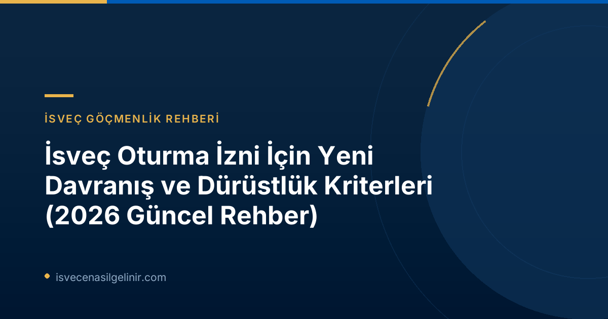

İsveç Oturma İzni Başvurularında "Vandel" Nedir?
"Vandel", İsveç hukukunda bir kişinin genel davranış biçimini, dürüstlüğünü ve yasalara uygunluğunu ifade eden kapsamlı bir kavramdır. Bu kavram, yalnızca adli sicilde yer alan suçları değil, aynı zamanda toplumsal kurallara ve normlara aykırı hareketleri de içerir. Yeni düzenlemelerle birlikte, Migrationsverket artık bu "vandel" değerlendirmesini daha geniş bir yelpazede ele alacak ve başvuru sahiplerinin İsveç toplumuna uyum sağlama kapasitesini daha detaylı irdeleyecektir. Eski dönemlerde, oturma izni değerlendirmelerinde genellikle ağır suçlar veya ciddi yasalara aykırı durumlar ret nedeni olarak kabul edilirken, şimdi bu anlayış genişletilmiş ve "suç niteliğinde olmayan ancak toplumsal düzene aykırı" olarak görülen eylemler de mercek altına alınmıştır.
Yeni Düzenlemeler Neleri Kapsıyor? Etki Alanları
13 Temmuz 2026 itibarıyla yürürlüğe giren bu düzenlemeler, İsveç'te oturma izni almak isteyen herkes için önemli bir dönüm noktasıdır. Yeni kurallar, Migrationsverket'e, bir kişinin İsveç'teki davranışlarının ve dürüstlüğünün, yasal bir suç olmasa bile, oturma izni başvurusunun veya mevcut iznin geleceği üzerinde doğrudan bir etkiye sahip olmasını sağlayan yetkiler tanımaktadır.
Migrationsverket Hangi Durumlarda Başvuruyu Reddedebilir veya İzni İptal Edebilir?
Yeni ve sıkılaştırılmış vandel kuralları çerçevesinde, Migrationsverket'in bir oturma izni başvurusunu reddetmesi veya mevcut bir izni iptal etmesiyle sonuçlanabilecek bazı başlıca durumlar şunlardır:
- Tekrarlanan Kural İhlalleri: Küçük çaplı olsa bile, zaman içinde tekrar eden trafik ihlalleri, kamu düzenini bozucu eylemler gibi davranışlar.
- Yanlış Bilgi Beyanı: Oturma izni başvurusu, vatandaşlık başvurusu, sosyal yardım veya diğer devlet kurumlarına yapılan beyanatlarda kasıtlı olarak yanlış veya yanıltıcı bilgi sunulması.
- Dürüst Olmayan Yollarla Geçim Sağlama: Kayıtdışı çalışma, sahtekarlık, kara para aklama gibi yasa dışı veya etik olmayan yollarla gelir elde etme.
- Suç Örgütleriyle İlişki: Organize suç örgütleriyle herhangi bir düzeyde bağlantı veya işbirliği.
- Ödeme Emirleri ve Sosyal Yardımlarla İlgili Yanlış Beyanlar: Kronofogden (İcra ve Tahsilat Dairesi) gibi diğer kamu kurumlarından elde edilen ödeme emri bilgileri, försörjningsstöd (geçim desteği), sosyal sigorta ve diğer sosyal hak başvurularında sunulan yanlış veya eksik beyanlar.
Migrationsverket Vandel Değerlendirmesini Nasıl Yapacak?
Migrationsverket, vandel değerlendirmesini oldukça detaylı ve bireysel bir süreçle yürütecektir. Bu değerlendirmede, başvuruyu yapan kişinin regele uyumu ve dürüstlüğü üzerine yapılan kapsamlı bir analiz esas alınacaktır. Kurum, sadece adli sicil kayıtlarını değil, aynı zamanda diğer kamu kurumlarından edinilen finansal geçmiş, sosyal yardım başvuruları ve benzeri bilgileri de göz önünde bulunduracaktır.
Önemli bir nokta, tekil ve küçük çaplı bir hatanın genellikle bir ret sebebi olmamasıdır. Ancak, tekrarlanan davranışlar veya zaman içinde sürekli olarak kurallara uymama eğilimi, değerlendirmenin sonucunu ciddi şekilde etkileyebilir. Migrationsverket, bu süreçte idari hukukun temel ilkeleri olan yasalara uygunluk (legalitet), nesnellik ve tarafsızlık prensiplerine sıkı sıkıya bağlı kalacaktır. Kararlar her zaman iyi gerekçelendirilmiş ve şeffaf olacaktır.
Değerlendirme aynı zamanda bir denge prensibine dayanır: bireyin oturma izni alma hakkı ile toplumun düzenli, dürüst ve yasalara saygılı vatandaşlar beklentisi arasındaki denge gözetilir. Kişinin oturma izni talebinin dayandığı özel durumlar ve gerekçeler, tespit edilen olumsuz davranışların ciddiyetiyle orantılı olarak değerlendirilecektir.
"Vandel" Değerlendirmesinde Dikkate Alınan Kaynaklar
Migrationsverket, vandel değerlendirmesi için geniş bir bilgi ağı kullanacaktır:
- Adli Sicil Kayıtları: Daha önce olduğu gibi, suç işleme geçmişi hala kritik bir faktördür.
- Diğer Kamu Kurumlarından Alınan Bilgiler: Özellikle Kronofogden'den alınan ödeme emirleri, sosyal hizmetlerden alınan geçim desteği kayıtları ve Försäkringskassan'dan (Sosyal Sigorta Kurumu) alınan bilgiler gibi çeşitli kaynaklar incelenecektir. Yanlış beyanlar veya usulsüzlükler bu kanallardan tespit edilebilir.
Kimler Yeni "Vandel" Kurallarından Etkilenmeyecek?
Bu sıkılaştırılmış kurallar genel olarak İsveç ulusal hukukuna dayalı oturma izni başvurularını hedef almakla birlikte, bazı istisnalar bulunmaktadır:
Yeni Vandel Kurallarının Uygulama Alanları ve İstisnalar
| Durum | Kapsam | Açıklama |
|---|---|---|
| Kapsananlar | İsveç ulusal hukukuna tabi genel oturma izni başvuruları | Çalışma izni, aile birleşimi (AB/AEA vatandaşları dışındaki), eğitim izni gibi İsveç iç hukukuna dayalı izinler. |
| Kapsamayanlar | Uluslararası Koruma (Sığınma) Başvuruları | Uluslararası anlaşmalar ve insancıl gerekçelerle yapılan sığınma başvuruları bu kuralların dışındadır. |
| Kapsamayanlar | AB Hukukuna Dayalı Oturma İzinleri | AB/AEA vatandaşları ve onların aile fertlerinin çalışma, eğitim veya aile birleşimi gibi AB direktifleri kapsamında yaptıkları başvurular. |
| Örnek Kapsanan Davranışlar | Vergi kaçakçılığı, sosyal yardım sahtekarlığı, hırsızlık (küçük çaplı/tekrarlanan), düzensiz ödemeler, yanlış beyanlar. | Tekil ve küçük çaplı eylemler genellikle ret sebebi olmasa da, tekrarlanan veya sistemli davranışlar önemli kanıtlar oluşturacaktır. |
İsveç vatandaşlık sürecindeki dürüstlük kriterleri hakkında daha fazla bilgi için sverigemedborgarskapsprov.com adresini ziyaret edebilirsiniz.
İsveç'te Yaşayan veya Yaşamak İsteyenler İçin Neler Değişiyor?
Yeni düzenlemeler, İsveç'te yasal statü elde etmek veya mevcut statüsünü korumak isteyen herkes için daha dikkatli ve sorumlu bir tutum sergileme gerekliliğini ikiye katlamaktadır. Artık devlet kurumlarıyla olan tüm etkileşimlerinizde, finansal işlemlerinizde ve genel davranışlarınızda kusursuzluk beklenmektedir.
- Disiplinli ve Yasalara Uygun Yaşam: İsveç toplumunun değerlerine ve yasalara tamamen uyum sağlamak her zamankinden daha önemli hale gelmiştir.
- Detaylı Arka Plan Kontrolü: Tüm oturma izni başvurularında, sadece adli sicil değil, kişinin finansal ve sosyal geçmişine dair daha derinlemesine araştırmalar yapılacaktır.
- Doğru ve Eksiksiz Bilgi Beyanı: Sosyal yardım, işsizlik maaşı veya benzeri devlet desteklerine başvururken verdiğiniz bilgilerin doğruluğu titizlikle kontrol edilecektir. Yanlış beyanlar ciddi sonuçlar doğurabilir.
- Borç ve Ödeme Yükümlülükleri: Kamu veya özel kurumlara olan borçların ve ödeme yükümlülüklerinin zamanında ve eksiksiz yerine getirilmesi, vandel değerlendirmesinde olumlu bir faktör olarak kabul edilecektir. Ödeme defaults (ödeme emri) bilgileri Migrationsverket tarafından erişilebilir olacaktır.
Başvuru Sahiplerine Öneriler
İsveç'te sorunsuz bir göçmenlik süreci yaşamak ve oturma izninizi riske atmamak için aşağıdaki önerilere dikkat etmeniz büyük önem taşımaktadır:
- Şeffaf ve Dürüst Olun: Tüm resmi başvurularda ve devlet kurumlarıyla olan iletişiminizde daima doğru ve eksiksiz bilgi verin. En ufak bir yanıltıcı bilginin bile gelecekte sorun yaratabileceğini unutmayın.
- Yasalara Uyun: Sadece ağır suçlardan değil, trafik kurallarından vergi mevzuatına kadar tüm yasalara uyum konusunda hassas olun. Tekrarlayan küçük ihlaller bile birikerek olumsuz bir tablo oluşturabilir.
- Mali Disiplin: Her türlü borç ve ödeme yükümlülüğünüzü zamanında yerine getirin. Kronofogden kayıtlarına düşmek, oturma izni değerlendirmenizde ciddi bir olumsuzluk olarak algılanabilir.
- Yanlış Beyanattan Kaçının: Özellikle sosyal güvenlik, işsizlik sigortası veya diğer sosyal yardımlar için yapılan başvurularda kesinlikle yanlış veya yanıltıcı bilgi vermeyin. Bu tür eylemler "dürüst olmayan yollarla geçim sağlama" veya "kural ihlali" olarak değerlendirilebilir.
- Toplumsal Kurallara Saygı: İsveç toplumunun genel normlarına ve beklentilerine uygun davranın. Kamu düzenini bozucu veya etik dışı kabul edilebilecek eylemlerden uzak durun.
- Gerekirse Profesyonel Destek Alın: Göçmenlik süreçleri karmaşık olabilir. Şüpheleriniz varsa veya özel bir durumunuz varsa, bir göçmenlik danışmanından yardım almaktan çekinmeyin.
Bu yeni düzenlemeler, İsveç'in "iyi vatandaş" beklentisini daha net bir şekilde ortaya koymaktadır. İsveç'te başarılı bir gelecek inşa etmek adına, yasalara ve toplumsal kurallara uyumlu, dürüst ve sorumlu bir yaşam sürmek artık daha da kritik bir hale gelmiştir.
Referanslar:
İsveç'teki Geleceğinizi Güvence Altına Alın!
İsveç'teki göçmenlik ve vatandaşlık süreçleri karmaşık olabilir. Yeni düzenlemeler hakkında daha fazla bilgi almak ve başvurunuzu sağlam temeller üzerine kurmak için uzmanlarımızdan destek alın.